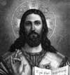

İsa Mesih gerçekte kimdi? Onun öğretisi dünyanın en yaygın dinine ilham verdi. Ne var ki 1-33 yılları arasında yaşayan bu Yahudi marangozun hayatına ilişkin pek çok ayrıntı halen bilinmemektedir.

İncil’de anlatıldığına göre Hz. İsa Beytüllahim’de doğdu. Kızıl Deniz yakınlarındaki Celile bölgesinde bir köy olan Nasıra’da büyüdü. Tipik bir Yahudi evinde yetişmişti. Büyük ihtimalle Aramice konuşuyordu. O zamanlar Aramice, Orta Doğu’nun en çok konuşulan diliydi.
Hz. İsa’nın yaşadığı dönemde Yakın Doğu’daki Yahudiler arasında büyük bir karmaşa ve sosyal anlaşmazlık hüküm sürüyordu. Bir zamanlar bağımsız Yahudi krallıkları olan Judae ve Celile, MÖ 40 yılında Roma egemenliğine girmişti. Yahudi inancı çatışan mezheplere bölünmüştü. Bu mezheplerin en ünlüleri Farislik ve Sadukilik’ti.
Hz. İsa, bilinmeyen bir tarihte gezgin bir Yahudi vaizi olan Vaftizci Yahya ile tanıştı. Yahya’nın her iki mezheple de bir ilişkisi yoktu, ancak kıyametin yakında kopacağını iddia ettiği vaazları ile kendisine epeyce kalabalık bir takipçi grubu toplamıştı. Yahya Hz. İsa’yı vaftiz etti (İncil’e göre Ürdün Nehri’nde). Ne var ki Yahya kısa bir süre sonra sorun çıkardığı gerekçesiyle Roma otoriteleri tarafından idam edildi.
Yahya’nın yakalanmasının ardından Hz. İsa kendi vaazlarını vermeye başladı. Mucizeler gösterdi. Uzun yıllar Yahudiliğin merkezi olan Yahudiye’de (Judaea) dolaştı. Öğretisini yaydı ve cemaatini oluşturdu. Daha sonra mesajını yayacak olan havarilerini biraraya topladı. İncil’e göre diğer dini gruplara alaycı yaklaşıyor ve Farisiler gibi güçlü gruplara eleştiriler getiriyordu.
Hz. İsa, 33 yılının Hamursuz Bayramı öncesi Judaizmin merkezi olan tapınağın bulunduğu Kudüs’e geldi. Kısa zamanda Roma Valisi Pontius Pilate ile arası açıldı. Vali, Hz. İsa şehre vardıktan sadece birkaç gün sonra onun çarmıha gerilmesini emretti.
Hz. İsa’nın hayatı ile ilgili tarihi bilgiler son derece kısıtlıdır. Hayatı ve öğretisi ile ilgili geleneksel anlatılara ise ölümünden on yıllar sonra yazılan İncil kaynaklık etmektedir. Ancak çok geçmeden Hz. İsa’nın öğretisinden ilham alan takipçileri büyük bir hızla Roma dünyasının dört bir yanına yayıldılar.
Ek Bilgiler
1- Aramice halen Suriye, Lübnan ve İsrail’de konuşulmaktadır; ancak bu dili konuşanların sayısı giderek azalmaktadır.
2- Hz. İsa kendi öğretisini Yahudilikten ayrı bir din olarak görmemişti. Hıristiyanlığın ayrı bir din haline gelişi onun ölümünden on yıllar sonra gerçekleşmiştir.
3- Roma İmparatorluğu’nda yaygın bir idam yöntemi olan çarmıha germe genellikle adi suçlar için uygulanmaktaydı. İmparatorluk 4. yy’da Hıristiyanlığı kabul edince bu ceza uygulanmamaya başlandı.